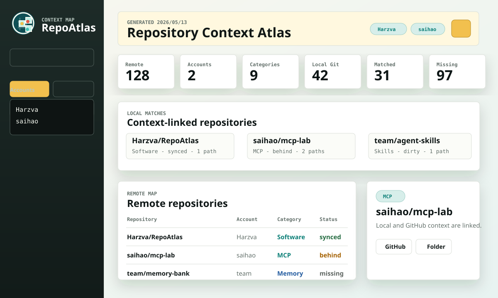

Multi-account
Scan the current GitHub CLI login or multiple account-router aliases in one merged atlas.
Multi-account context atlas
A Rust desktop atlas for mapping multiple GitHub accounts to local Git checkouts, context tags, sync drift, and one-click project folders.
RepoAtlas packages repository cartography into a desktop app: multi-account inventory, local Git discovery, automatic context tags, sync comparison, report exports, themes, and safe folder opening.
Scan the current GitHub CLI login or multiple account-router aliases in one merged atlas.
Tags repos as Skills, MCP, Memory, Software, Docs, Infra, Data, Research, and more.
Highlights synced, behind, ahead, diverged, dirty, no-upstream, and missing-local states.
Includes in-app GitHub login, visible progress, account modes, scan roots, and refresh errors.

从 GitHub Release 下载 Windows 版本。
先让本机具备 GitHub 扫描能力。
首次使用只需要认证一次。
把 GitHub 和本地项目连接起来。
从 Release 页面下载 macOS artifact。
macOS 使用系统 WebKit，实时扫描仍依赖 Git 与 GitHub CLI。
从 Terminal 运行包内二进制。
把账号与本地目录交给扫描台。
适合开发者或暂未覆盖的系统。
本地启动桌面应用并嵌入 dashboard。
提交前先做基本回归。
Release 仍推荐交给 GitHub Actions。
Future / TODO
Today RepoAtlas focuses on local-GitHub coordination from a desktop app. When Codex exposes richer plugin UI extension points similar to VS Code sidebars, RepoAtlas can become a Codex-native navigation layer for repositories, issue context, pull requests, releases, local folders, and conversation-linked project memory.
Install
Download the release asset, run it, and sign in with GitHub CLI for live rescans. Enter multiple accounts on separate lines when your work spans personal, product, and agent-tooling accounts.
gh auth login
git --version
RepoAtlas-vX.Y.Z-windows-x64.exe
RepoAtlas-vX.Y.Z-macos-ARM64.tar.gz